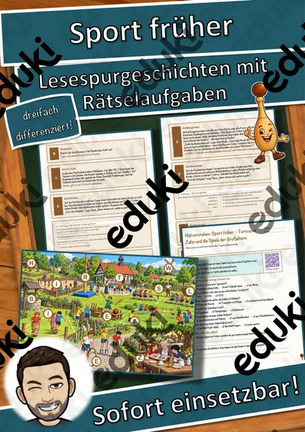
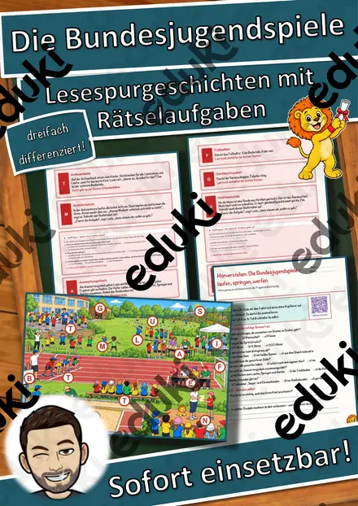
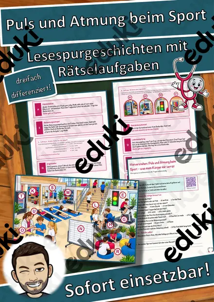
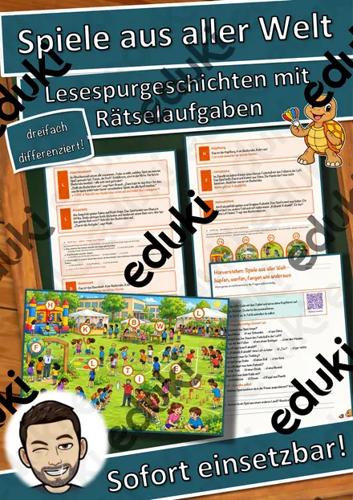
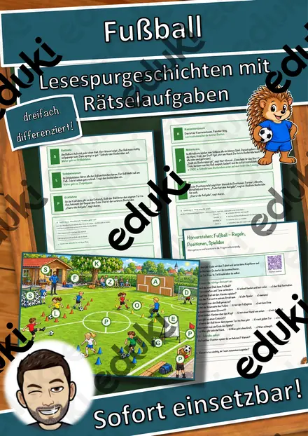
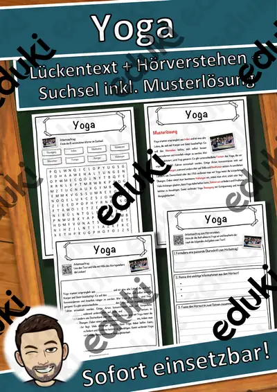
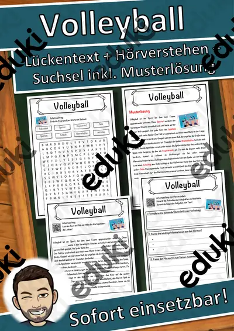

Sport, Spiele und Bewegung: Arbeitsblätter für Klasse 1–8 (Sport)
Sport und Bewegung gehören zum Schulalltag. Neben Regeln und Technik stehen Fairness, Gesundheit und große Sportereignisse im Fokus.
Als roter Faden eignen sich Mannschaftsspiele, Regeln und Bundesjugendspiele; Fitness, Fairness und Sportarten lassen sich je nach Klassenstufe zuschalten.
Die Lehrpläne der Länder sehen das Thema im Fach Sport vor, in der Regel in den Klassen 1 bis 8. Als Ziel gilt: die Schülerinnen und Schüler kennen Regeln und gehen fair miteinander um.
Im Alltag einer Lehrkraft zählt, dass Material sofort einsatzbereit ist: Die Blätter zu Sport, Spiele und Bewegung greifen Regeln, Bundesjugendspiele und Fitness auf, lassen sich ausdrucken und kommen mit Lösungen, damit die Vorbereitung kurz bleibt. Leistungsstarke und schwächere Lesende erhalten über die Lesespurgeschichten Texte in drei Stufen.
Zum Thema finden Sie 51 Materialien, unter anderem Sport-Werkstatt Gesamtpaket: 13 Sportarten, Sport-Werkstatt Paket Laufen & Spiele: 2 und Sport-Werkstatt Paket Bewegungskünste: 4, verteilt auf 13 Lesespurgeschichten und 11 Lückentexte mit Hörverstehen in Klasse 1–9. Eine Sportart in der Theorie vorzubereiten und dann zu spielen verbindet Wissen und Praxis.
Das gehört zum Thema
Passende Arbeitsblätter und Materialpakete

Sport-Werkstatt Gesamtpaket: 13 Sportarten, Aufgabenkarten in 3 Stufen (Klasse 3–8)

Sport-Werkstatt Paket Laufen & Spiele: 2 Sportarten in 3 Stufen (Klasse 3–8)

Sport-Werkstatt Paket Bewegungskünste: 4 Sportarten in 3 Stufen (Klasse 3–8)

Sport-Werkstatt Paket Schläger & Stock: 3 Sportarten in 3 Stufen (Klasse 3–8)

Sport-Werkstatt Paket Ballspiele: 4 Sportarten in 3 Stufen (Klasse 3–8)

Der Sportverein – mitmachen, mithelfen, mitbestimmen – Lesespurgeschichte mit Rätselaufgaben (Klasse 8)

Sport und Umwelt – Natursport ohne Spuren – Lesespurgeschichte mit Rätselaufgaben (Klasse 9)

Sport früher – Turnvater Jahn und die Spiele der Großeltern – Lesespurgeschichte mit Rätselaufgaben (Klasse 6)

Die Bundesjugendspiele – laufen, springen, werfen – Lesespurgeschichte mit Rätselaufgaben (Klasse 3)

Inklusion im Sport – Para-Sport ausprobieren – Lesespurgeschichte mit Rätselaufgaben (Klasse 8)

Erste Hilfe beim Sport – richtig handeln bei Sportverletzungen – Lesespurgeschichte mit Rätselaufgaben (Klasse 7)

Puls und Atmung beim Sport – was mein Körper mir verrät – Lesespurgeschichte mit Rätselaufgaben (Klasse 6)

Spiele aus aller Welt – hüpfen, werfen, fangen wie anderswo – Lesespurgeschichte mit Rätselaufgaben (Klasse 3)

Fußball – Regeln, Positionen, Spielidee – Lesespurgeschichte mit Rätselaufgaben (Klasse 3)

Fitness und Krafttraining – richtig trainieren – Lesespurgeschichte mit Rätselaufgaben (Klasse 9)

Volleyball – pritschen, baggern, schmettern – Lesespurgeschichte mit Rätselaufgaben (Klasse 8)

Schwimmen und Sinken – Lesespurgeschichte mit Rätselaufgaben (Klasse 7)

Olympia in der Antike – Lesespurgeschichte mit Rätselaufgaben (Klasse 7)

Yoga Lückentext mit Wortspeicher Hörverstehen und Suchsel

Volleyball Lückentext mit Wortspeicher Hörverstehen und Suchsel

Turnen Lückentext mit Wortspeicher Hörverstehen und Suchsel

Tennis Lückentext mit Wortspeicher Hörverstehen und Suchsel

Basketball Lückentext mit Wortspeicher Hörverstehen und Suchsel

Fußball-Weltmeisterschaft Lückentext mit Wortspeicher Hörverstehen und Suchsel
Weitere 27 Materialien zum Thema im Material-Finder.
Häufige Fragen
Für welche Klassenstufe passen die Arbeitsblätter zu Sport, Spiele und Bewegung?
Die 51 Materialien zu diesem Thema sind für Klasse 1–9 ausgelegt, die meisten davon für Klasse 6. Einzelne Titel lassen sich mit Anpassung auch eine Stufe darunter oder darüber einsetzen.
Welche Inhalte decken die Materialien zu Sport, Spiele und Bewegung ab?
Inhaltlich reicht die Auswahl von Mannschaftsspiele über Regeln und Bundesjugendspiele bis zu Fairness; Details stehen bei den einzelnen Materialien.
Wie setze ich Sport, Spiele und Bewegung im Unterricht ein?
Eine Sportart in der Theorie vorzubereiten und dann zu spielen verbindet Wissen und Praxis. So entsteht aus den Blättern eine kleine Einheit, die sich auf zwei bis drei Stunden verteilen lässt.
Mehr Material nach Fach und Klasse
- Alle Materialien Sport
- Arbeitsblätter Sport Klasse 1
- Arbeitsblätter Sport Klasse 3
- Arbeitsblätter Sport Klasse 4
- Arbeitsblätter Sport Klasse 5
- Arbeitsblätter Sport Klasse 6
- Arbeitsblätter Sport Klasse 7
- Arbeitsblätter Sport Klasse 8
- Unterrichtsmaterial Klasse 1
- Unterrichtsmaterial Klasse 2
- Unterrichtsmaterial Klasse 3
- Unterrichtsmaterial Klasse 4
- Unterrichtsmaterial Klasse 5
- Unterrichtsmaterial Klasse 6
- Unterrichtsmaterial Klasse 7
- Unterrichtsmaterial Klasse 8
Verwandte Lehrplanthemen
- DaZ: Wortschatz für den Alltag (DaZ/DaF, Klasse 1–8)
- Gefühle und Freundschaft (Ethik & Werte und Normen, Klasse 1–6)
- Lesen und Leseverstehen (Deutsch, Klasse 1–6)
- Malen, Zeichnen und Drucken (Kunst, Klasse 1–6)
- Atmung, Verdauung und Organe (Biologie, Klasse 5–9)